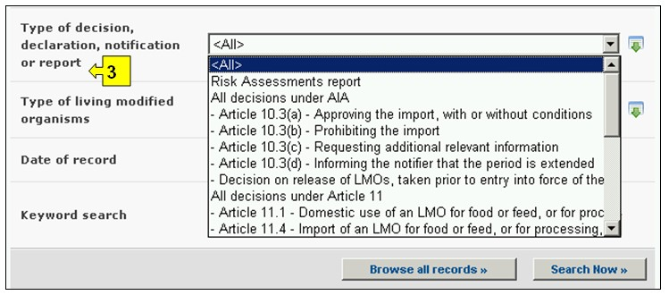
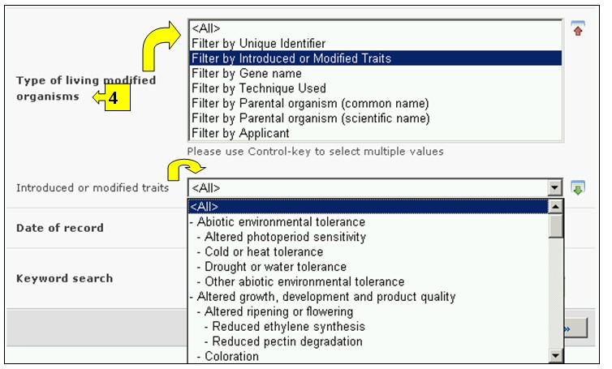
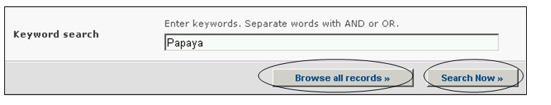
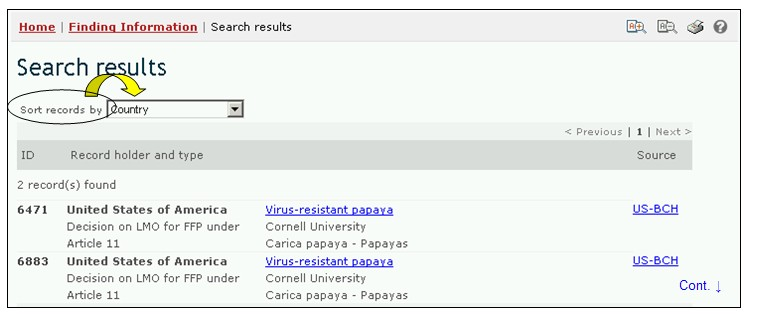
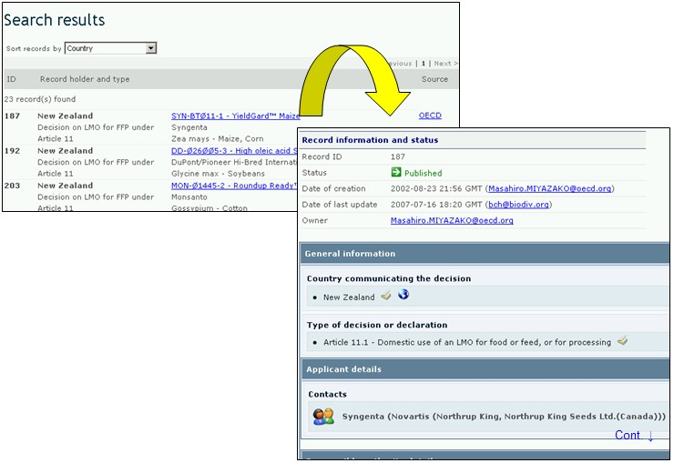

Ссылка: http://bch.cbd.int/database/decisions/
В соответствии с Картахенским протоколом Стороны обязаны предоставлять МПБ сведения о своих решениях, заявлениях и уведомлениях в отношении ЖИО и законах и нормативно-правовых положений в области биобезопасности.
Поиск информации о решениях стран и их заявлениях и уведомлениях в отношении ЖИО можно осуществлять, используя ссылки Country’s Decisions and other Communication (Решения стран и уведомления) в выпадающем меню раздела навигационной панели Finding Information (Поиск информации), или в меню в левой части страницы Поиск информации, или используя соответствующую ссылку в тексте страницы.

Рисунок 29
Данная база данных позволяет осуществлять поиск сведений о следующих решениях стран и их заявлениях и уведомлениях в отношении ЖИО:
1. Отчеты об оценке риска ЖИО.
2. Решения в соответствии с процедурой заблаговременного обоснованного согласия (ЗОС):
- о разрешении импорта на определенных условиях или без таковых (Статья 10.3a),
- о запрещении импорта (Статья 10.3b),
- о запрашивании соответствующей дополнительной информации (Статья 10.3c),
- об информировании уведомителя о продлении сроков принятия решения (Статья 10.3d),
- решения, связанные с высвобождением ЖИО, принятые страной до вступления в силу Протокола.
3. Решения в соответствии со Статьей 11:
- о внутреннем использовании ЖИО в качестве продовольствия или корма или для обработки (Статья 11.1),
- об импорте ЖИО, предназначенных для использования в качестве продовольствия или корма или для обработки, проводимом в рамках национальной регламентационной базы (Статья 11.4),
- об импорте ЖИО, предназначенных для использования в качестве продовольствия или корма или для обработки, проводимом в отсутствие национальной регламентационной базы (Статья 11.6),
- решения о внутреннем использовании ЖИО в качестве продовольствия или корма или для обработки, принятые страной до вступления в силу Протокола.
4. Решения, заявления и уведомления в соответствии со Статьями 6, 13, 14, 17 и 25:
- о транзите (Статья 6.1),
- об использовании в закрытых системах (Статья 6.2),
- о применении упрощенных процедур для случаев, когда преднамеренное трансграничное перемещение в нее может производиться одновременно с уведомлением Стороны импорта (Статья 13.1a),
- о применении упрощенных процедур для импорта ЖИО, которые подлежат исключению из сферы действия процедуры ЗОС (Статья 13.1.b),
- об использовании внутренних нормативных положений в отношении конкретных импортных поставок ЖИО (Статья 14.4),
- уведомления о непреднамеренных трансграничных перемещениях ЖИО (Статья 17.1),
- уведомления о случаях незаконных трансграничных перемещений ЖИО (Статья 25.3).
5. Решения об импорте и высвобождении ЖИО, принятые страной до вступления в силу Протокола.
6. Заявления в отношении ратификации Протокола или присоединении к нему,
- решения в отношении полевых испытаний ЖИО, исключенных из сферы действия процедуры ЗОС.
7. Другие решения, заявления, уведомления и отчеты.
На странице поиска Решений стран и уведомлений предусмотрены шесть с полей с критериями уточнения поиска. Каждое из полей содержит выпадающее меню, позволяющее выбрать необходимый критерий. По умолчанию (если критерий не выбран) используется первый пункт меню. Справа от полей выбора критериев расположены кнопки, позволяющие перейти в режим выбора нескольких критериев. В этом режиме возможно добавление критериев поиска путем выбора необходимых критериев при удерживании нажатой кнопки Ctrl (Control) на клавиатуре.

Рисунок 30
В выпадающем меню поля 1 [Выберите страну] приведен список всех стран, позволяющий выбрать для поиска одну или несколько необходимых стран.

Рисунок 31
В меню поля 2 [Выберите группу стран] приведен список групп стран, позволяющий выбрать для поиска одну или несколько необходимых групп. Список групп стран содержит все основные географические и политические группы, что позволяет осуществлять поиск сведений, предоставленных конкретной группой или группами стран.

Рисунок 32
В меню поля 3 [Вид решения, декларации, уведомления или отчета] перечислены виды решений и иных сообщений, содержащиеся в данной базе данных. Это позволяет сузить поиск до выбора конкретных решений или сообщений по конкретным аспектам использования ЖИО.

Рисунок 33
Меню поля 4 [Тип живого измененного организма] позволяет применить соответствующие фильтры, связанные с определенными аспектами ЖИО, что позволяет сузить круг поиска до решений, отвечающим выбранным критериям поиска. Используются следующие категории фильтров: (1) уникальный идентификатор ЖИО (например, MONØØ81Ø-6), (2) встроенный или измененный признак (например, устойчивость к глифосату – Glyphosate tolerance), (3) использованный метод (например, агробактериальная трансформация – Agrobacterium-mediated), (4) общепринятое название родительского организма (например, кукуруза), (5) научное название родительского организма (например, Zea mays) и (6) заявитель (текстовое поле – например, Monsanto).
Выбор одного или нескольких фильтров в выпадающем меню открывает соответствующие дополнительные поля, которые содержат свои выпадающие меню с вариантами, связанными с выбранными фильтрами. Выбрать несколько вариантов фильтра можно, использую клавишу Ctrl (Control), т.е. путем выбора необходимых вариантов в меню при удерживании нажатой кнопки Ctrl (Control) на клавиатуре

Рисунок 34
Меню поля 5 [Дата предоставления сведений] позволяет сузить круг поиска сведений в соответствии с датой их предоставления МПБ. Выпадающее меню содержит ряд временных периодов для оптимизации поиска сведений, предоставленных за определенное время (например, за последний день, за последний месяц, за последний год и т.д.).

Рисунок 35
Поле 6 [Ключевые слова] предоставляет возможность использования ключевых слов для сужения круга поиска. Пользователь может использовать стандартный синтаксис (AND/OR) для комбинации ключевых слов или корневых частей слов (например, «Import OR Export», «координ* AND центр»). В результате поиска с использованием ключевых слов будут представлены только сведения, содержащие конкретные ключевые слова, но не их синонимы (например, в результате поиска с использованием ключевого слова «Maize» будут представлены сведения, содержащие только это слово, и не представлены, содержащие его синонимы «Corn» и «Zea mays»)

Рисунок 36
На странице поиска расположены три кнопки, инициирующие процедуру поиска. Кнопки Search Now (Искать), расположенные вверху и внизу формы поиска, позволяют осуществить поиск, используя выбранные критерии в полях функции поиска. Результаты поиска будут расположены в алфавитном порядке по названию страны (по умолчанию). Кнопка Browse all records (Просмотреть все записи) дает возможность просмотреть все сведения этой базы данных.
Если в ходе поиска будет найдено более 1000 записей, то в качестве результата поиска будут отражены только первые 1000 записей.

Рисунок 37
Страницы Результатов поиска имеют функцию сортировки, расположенную вверху страницы, которая может быть использована для сортировки результатов в соответствии с параметрами, имеющими отношение к данной категории информации. Необходимо отметить, что параметры сортировки результатов изменяются в зависимости от критериев поиска.

Рисунок 38
Пример. Предположим, что необходимо найти все решения, принятые Новой Зеландией в рамках Статьи 11 Протокола. Для этого нужно выбрать Новая Зеландия в поле Select a country (Выбор страны), Все решения в рамках Статьи 11 в поле Type of decision,declaration, notification or report (Тип решения, декларации, уведомления или отчета). После нажатия кнопки Search Now (Искать) будут представлены результаты поиска.
Результаты поиска будут представлены в виде списка, состоящего из кратких сведений. Подробную информацию о каждом документе можно просмотреть, используя ссылку в заголовке документа (синий полужирный шрифт).

Рисунок 39

Рисунок 40